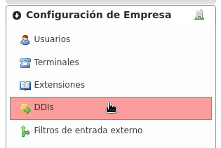
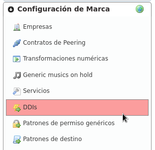
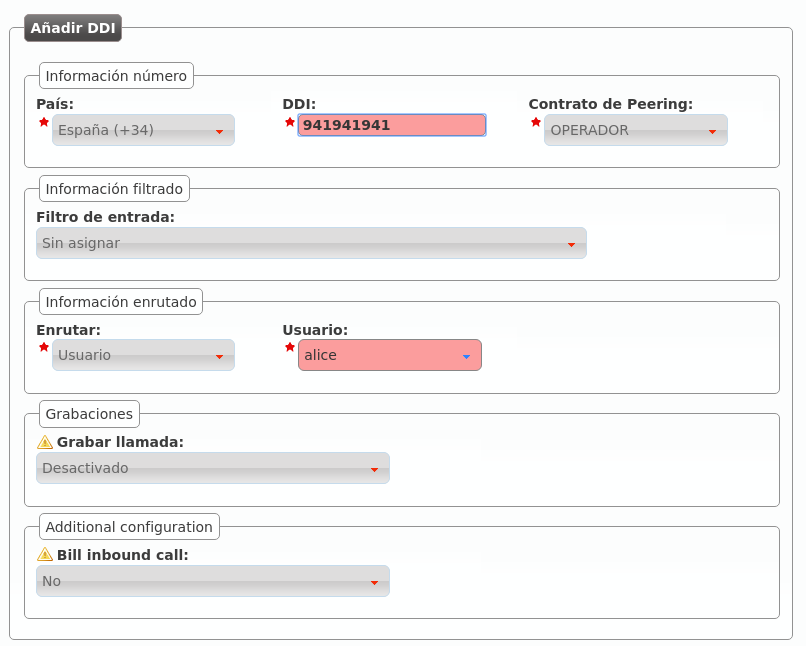

Una vez que hemos llegado a un acuerdo con un Operador VoIP y hemos configuradoesta relación de peering, solo faltan dos tareas:
Dar de alta un DDI externo¶
El operador de marca, como único responsable de llegar a acuerdos de peering con operadores IP, es el responsable de dar de alta los DDIs de cada operador.
Para ello, tiene que acceder a la siguiente sección:
Observar que para poder acceder a esta sección el operador de marca (o god) tiene que haber emulado una empresa concreta y acceder desde el bloque Configuración de empresa.
Atención
La sección Configuración de empresa > DDIs es distinta cuando accede un administrador de empresa que cuando accede un operador global o de marca. El administrador de empresa no puede crear nuevos DDIs ni borrar los que ya existen, solo puede editar los que el operador de marca haya creado.
Por otra parte, la sección Configuración de marca > DDIs solo sirve para que el operador de marca pueda ver los DDIs asociados a sus distintas empresas, es un listado en read-only.
Una vez explicados estos conceptos, añadimos un nuevo DDI y rellenamos los campos necesarios:
- País
El país de la númeración pública que estamos dando de alta.
- DDI
El número en cuestión, sin códigos de país.
- Contrato de peering
El contrato de peering por el que entra la numeración. Esta relación permite aplicar las Transformaciones numéricas adecuadas.
- Filtro de entrada
Permite aplicar lógicas de filtrado en base a horario y calendario, se verán en Filtros de entrada externo. Dejar sin seleccionar para no aplicar filtro alguno.
- Enrutar
Un DDI puede tener distintos tratamientos. Para nuestro objetivo, enrutar al usuario Alice.
- Grabar llamadas
Dejar desactivado de momento, se explicará en Grabación de llamadas.
- Tarificar llamadas entrantes
Requiere del módulo de tarificación externa y permite tarificar llamadas entrantes a numeraciones especiales. Consultar a los desarrolladores de la solución en caso de estar interesados.
Configurar tratamiento en entrada¶
En la sección anterior hemos dado de alta el DDI y lo hemos configurado, pero conviene tener claro que en un uso normal, el administrador de marca simplemente daría de alta el DDI y el administrador de empresa, accediendo a la misma sección, lo configuraría apuntándolo al usuario / grupo de salto / etc. adecuado, configurando horarios, calendarios, etc.
Nota
En este punto, marcando el número público debería de sonar el teléfono de Alice consiguiendo, por tanto, el objetivo de este bloque :)